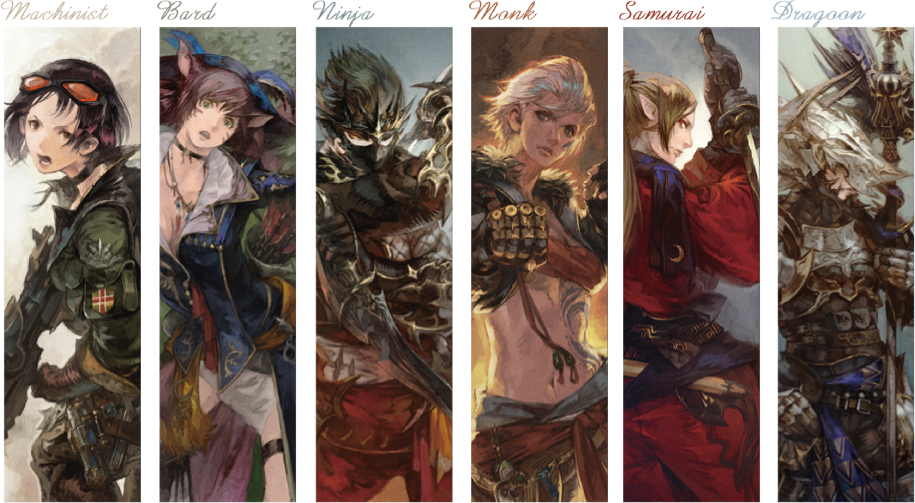

In FINAL FANTASY XIV, sufficient mastery of a class will open up the path to one or more related jobs and their respective actions.
To learn more about job actions, traits, and job gauges, check out the menu.

❮
❯